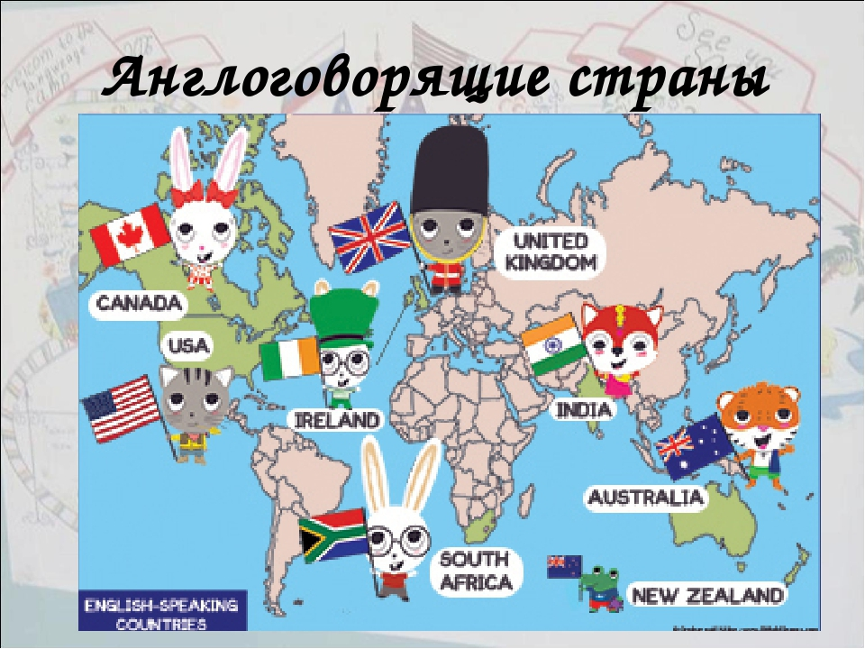

Англоязычные страны
Англоязычные страны
Англоязычные страны
В то же время англоязычные страны зачастую имеют второй, а то и третий официальный язык. Туристам знать его не обязательно, но представьте, насколько это расширит границы восприятия! Ведь именно ради этого мы отправляемся в путешествия. Поэтому давайте выясним, в каких странах используется английский как основной язык, и что же такое англосфера.
Но мы-то понимаем, что в реальном мире нельзя игнорировать такие политические и социальные аспекты как, например, границы государств, количество их населения, официальные символы и т.п.
